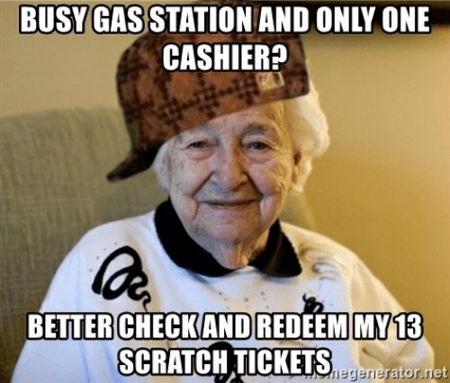

Skatepark - 4/9
The highlight of my Thursday was going to my favorite skatepark, Park De La Cruz. My friend Elijah recorded this line for me
The grinds are (respectively):
- Backside 50-50
- Frontside Boardslide
- Frontside Smith
Work - 4/10
The main event of my Friday was unfortunately going to work where I am a cashier at a gas station.
Naruto: Shippuden - 4/11
My Saturday mainly consisted of watching Naruto: Shippuden since I am currently in the War Arc which I have been told is the best part of the show (and it is living up to the hype). Here is my favorite soundtrack from the show, Sadness and Sorrow: